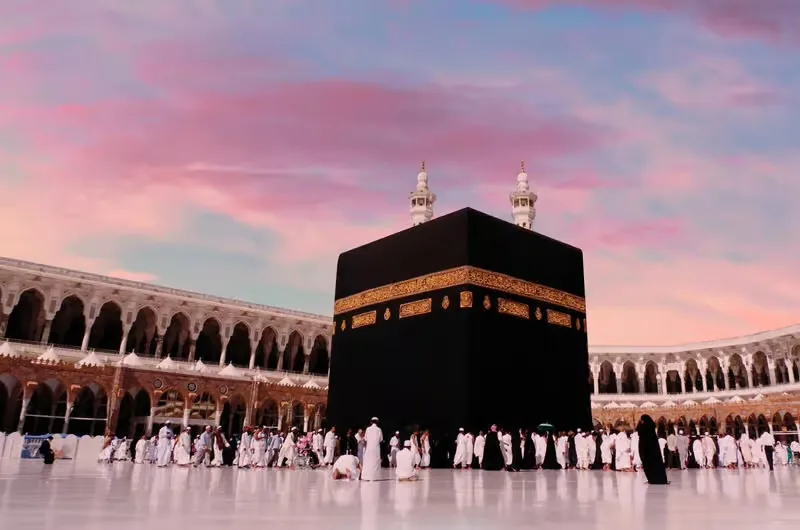

Qu’est-ce que la Omra ?
La Omra est un pèlerinage accompli à La Mecque. Plus courte que le Hajj, elle comprend l’entrée en état d’ihram, le tawaf autour de la Kaaba, le sa’i entre Safa et Marwa, puis la coupe des cheveux. Elle se réalise généralement tout au long de l’année, selon les règles d’accès en vigueur.